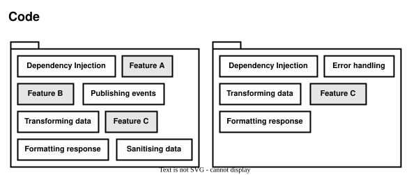
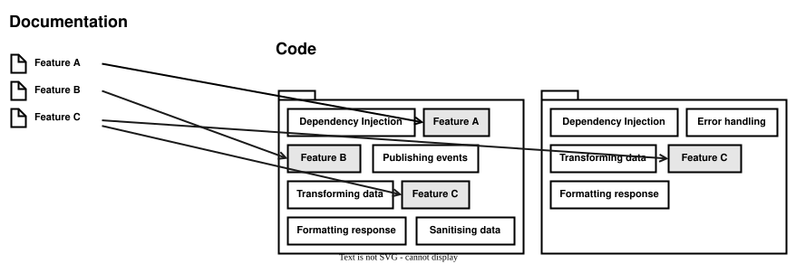
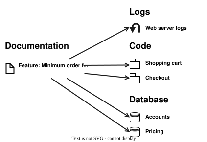
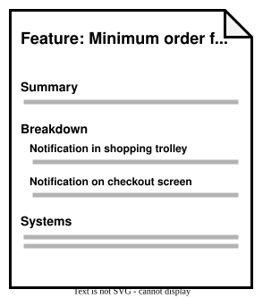
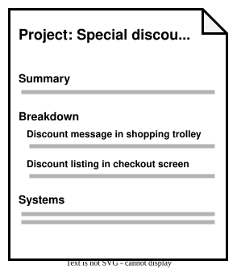
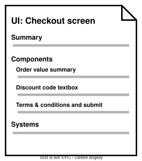
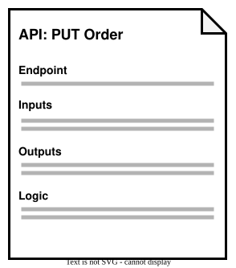
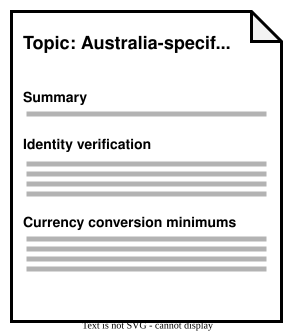

Documentation can substitute for refactoring difficult code-bases.
Most of the software projects I've worked on involved complex and poorly structured code. This can happen for various reasons, even with the most dedicated and experienced developers. The problem space is complex, difficult to navigate and/or highly dynamic, time is limited, there is a high turn-over of developers, language and frameworks have limitations.
Refactoring is an oft-touted solution, aiming to bring order to a chaotic code-base by cleaning and improving the code without changing its functionality. Regression testing, via unit tests and end-to-end tests, allow us to verify that the code still performs its intended function.
The problem with refactoring is that almost no team (that I've worked on) ever has time for it. There always seem to be other activities that would generate more business value, and faster, and those activities tend to be prioritised. In the professional world, at least, code only exists to achieve an outcome, not as a work of art for its own sake.
Given the above, I've come to think that, at least in some situations, such as a rapidly growing or changing business environment, understanding and documenting existing code might be a better use of time than a lengthy refactoring. Bad code can stay bad, but can be worked with effectively, if it is well understood by the development team so that they can work with it efficiently.
If software engineering is the art of managing complexity, software documentation is the art of managing the complexity of software.
Let me dive deeper to explain this perspective.
Why refactoring takes so long
Code-changes themselves are easier than ever. IDEs provide powerful tools for bulk renaming, find-and-replace, structural search, regular expression search, etc. Unit and integration tests can verify correctness of individual components and groups of components. And practices like inversion-of-control, object-oriented programming and functional programming can support decoupled, flexible code bases that are easy to modify.
The time-consuming part of refactoring is not necessarily the code changes. It can be:
- Working out what changes need to be made and
- Ensuring that those changes don't cause system behaviour errors
During a refactoring (at least, in in any non-trivial code-base) we are likely to learn a lot more about the code, frameworks, business domain than we knew beforehand. As we learn more, our refactoring moves change. This means that what started out as, for example, a simple extraction of a function, can quickly turn into a major alteration, impacting many parts of the codebase.
Additionally, as the scope of the refactoring changes, so too does the scope of the regression testing that will need to be done, to ensure that the changes do not cause breakage. Even with 100% unit test coverage, any code change may open up gaps in coverage, requiring tests to be changed or new tests to be written. The application also needs to be end-to-end tested, whether in an automated or manual manner, and the scope of the end-to-end testing is also impacted.
These factors compound, causing a seemingly small refactoring to turn into a major undertaking, with questionable justification for time spent in proportion to business value.
We have to understand the code anyway
For any significant refactoring to be successful, the Developer likely needs to first have a solid grasp of the code being refactored. This means understanding the structure of the code as well as the expected behaviour of the code and the business problem it is intended to solve. Gaining this understanding takes a significant amount of time, as does making the actual changes.
I would argue that such understanding is necessary anyway, not only for refactoring, but for making any changes to the code at all, such as implementing new features, making modifications or fixing bugs.
If we have to spend time understanding code, whether or not we actively perform refactoring, then that understanding itself is of value. So we might as well invest more time into understanding the code, rather than trying to refactor it, given the greater payoff of understanding.
That understanding can be converted into documentation, for future reference and to transfer the knowledge to the rest of the team.
Documentation can be structured differently than code
A powerful feature of documentation is that can be organised in ways that best facilitate understanding and knowledge transfer.
This is much harder to do in code itself. Code usually has to deal with a mixture of concerns at once, such as the programming language itself, software frameworks, interfacing with other modules and systems (such as databases), security, performance, etc.
{kind=link}

For this reason, the way a code base is structured usually does not mirror the structure of the problem it is solving or the feature it is implementing. And even if some of the code could be refactored into a perfect, pure representation of the problem space, the problem space itself may be complex and multi-faceted, making it difficult to represent clearly in code.
Documentation, on the other hand, can be structured in any way or multiple ways at once. So documentation can be divided, grouped and organised in whichever way will best facilitate understanding and communication. For example, documentation can pull together information about each feature in the application into a set of "feature" pages.
{kind=link}

Documentation as a reference tool
Documentation can serve as a handy reference to consult when a certain question needs to be answered around a particular topic.
For example, suppose a Product Owner asks a Developer about some recent problems encountered with the a "Minimum order free shipping notification" feature. The Developer could consult a feature document which contains links to various resources such as web server logs. The Developer could then follow the link to the web server logs to check if any errors were logged.
So documentation can act as a central repository in which to find pointers to various resources, such as parts of the code and other systems.
{kind=link}

This referenceability, if used correctly, can make it much easier for a Developer to navigate a complex mass of code modules, databases, services, etc. in order to achieve some goal such as answering a question or diagnosing a bug.
Flavours of documentation
Let's look at a few documentation "flavours" that could be applied in various scenarios, depending on the situation.
Feature documentation
This flavour of documentation focuses on a feature of a software product or system used by customers or other actors.
It may give a brief summary of the feature and also provide some background information such as the business case.
It might then have sub-sections detailing the parts that make up the feature. It might also list the components or systems involved in implementing the feature, including links to code repositories and/or individual code files. It might also contain diagrams depicting user flows, execution flows and/or communication between systems. And it might link to various other flavours of documentation described in this article, such as User interface documentation for the User interface components that make up the feature.
{kind=link}

How it helps to work with difficult code
- Clarifies how the system behaves, or at least, is intended to behave
- Specifies which code or systems implement the behaviour
Project documentation
This flavour of documentation is similar to feature documentation, only it focuses on a project (which is time-bound), rather than a feature (which may exist indefinitely).
{kind=link}

How it helps to work with difficult code
- Clarifies why certain code or systems are changing
User interface documentation
This flavour of documentation describes the various parts of a user interface. A Developer can create this kind of documentation to communicate how the user interface currently works, is intended to work and/or should work in the future.
These docs could be organised as a hierarchy, aligned with the navigation structure of the application's user interface. Each leaf in the hierarchy has a dedicated page, and that page includes screenshots of that part of the UI, along with descriptive text broken into headings.
{kind=link}
{kind=link}

How it helps to work with difficult code
- Conceptually maps user interface elements to the code that implements them, when that mapping isn't made obvious by the code itself
- Clarifies how the user interface currently functions, or at least, is intended to function
API documentation
This flavour of documentation describes a programming interface of an application, such as the REST API of a web backend.
{kind=link}

How it helps to work with difficult code
- Conceptually maps APIs to the code that consumes them, when that mapping isn't made obvious by the code itself.
- Clarifies how the APIs currently function, or at least, are intended to function.
Topic documentation
For material which fits none of the above categories, specific "topic" documents can be created.
Suppose we are trying to describe something which isn't clearly a feature, a project, a part of the user interface or an API. For example, behaviours of an application which only apply in one particular country, for example, Australia. A topic document titled "Australia" could be created, and grouped under a heading such as "Country-specific behaviours".
{kind=link}
{kind=link}

How it helps to work with difficult code
- Communicates knowledge on specific topics associated with the code base, which are not clearly expressed by the code itself and don't fit into other categories of documentation.
Conclusion
Suitable documentation can facilitate understanding of complex and poorly structured code, enabling developers to work with it more efficiently.
Unlike refactoring, documentation can be added without a full build-deploy cycle, without risking breakage and without having to follow the structure of the code.
Creating documentation may be a better use of time than complex refactoring, if you are dealing with a complex code base, have tight time constraints and need to minimise risk.